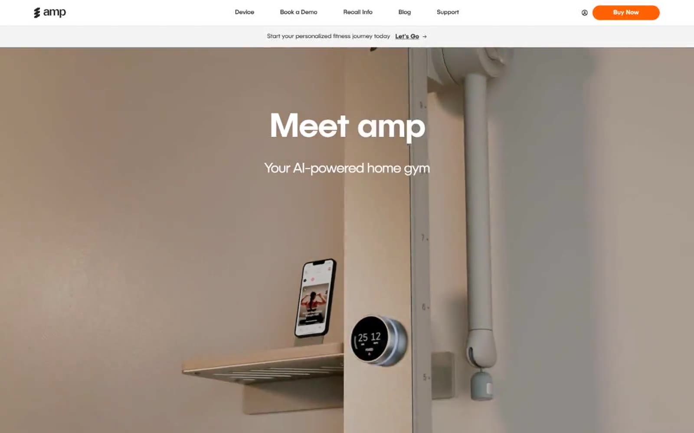

amp 的 Design.md 主题展示，围绕浅色界面、AI、暖色调、SaaS 产品组织页面。
Explore amp's light Other design system: Orange Ember #ff6105, Soft Peach #ffdfcd colors, PublicaSans typography, and DESIGN.md for AI agents.

#ff6105: #ff6105#ffdfcd: #ffdfcd#e5e5e5: #e5e5e5#0a0a0a: #0a0a0a#ffffff: #ffffff#f3f4f3: #f3f4f3#3c3e3d: #3c3e3d#a89a8b: #a89a8b#cccccc: #cccccc#292b2a: #292b2a#e5e7eb: #e5e7eb#fff8e9: #fff8e9display: Interbody: Intermono: ui-monospacehints: Inter,ui-monospace